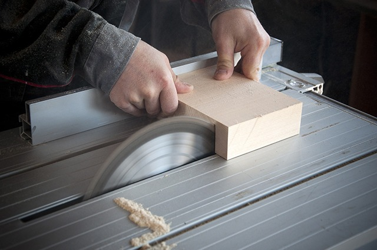

Se realiza en paralelo al eje longitudinal de la pieza de madera, paralelo al radio de la madera y de forma perpendicular a los anillos de crecimiento. A partir de este corte se obtienen piezas de madera de grano visible y gran brillo, muy fuertes y con poca deformación.
